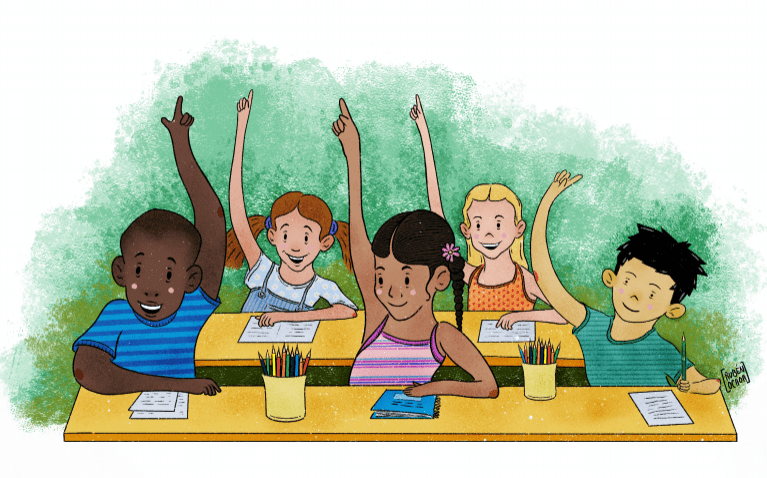

Garantizar una educación inclusiva, equitativa y de calidad
Objetivos del ODS 4
El Objetivo de Desarrollo Sostenible 4 busca garantizar una educación inclusiva y de calidad para todos, promoviendo oportunidades de aprendizaje durante toda la vida.
Asegurar que todos los niños completen la educación primaria y secundaria gratuita y de calidad.
Ofrecer acceso igualitario a la formación técnica, profesional y superior.
Eliminar las disparidades de género en la educación.
Mejorar la calidad de la educación a través de maestros cualificados.
Puntos Clave
Educación para el desarrollo sostenible y la ciudadanía global.
Infraestructuras educativas seguras e inclusivas.
Reducción del analfabetismo a nivel mundial.
Promoción de la igualdad de oportunidades en el acceso a la educación.
Datos y Estadísticas
Según la UNESCO, más de 260 millones de niños y jóvenes no están escolarizados. El ODS 4 pretende reducir esta cifra a cero para 2030.

Participa
¡Tú también puedes contribuir al ODS 4! Aquí hay algunas maneras en las que puedes ayudar:
Donar a organizaciones que trabajan por la educación.
Voluntariado en programas educativos.
Difundir información sobre la importancia de la educación de calidad.
La educación de calidad es fundamental para el desarrollo sostenible. Invertir en educación significa apostar por un futuro mejor para todos, donde la igualdad y el conocimiento sean la base del progreso.